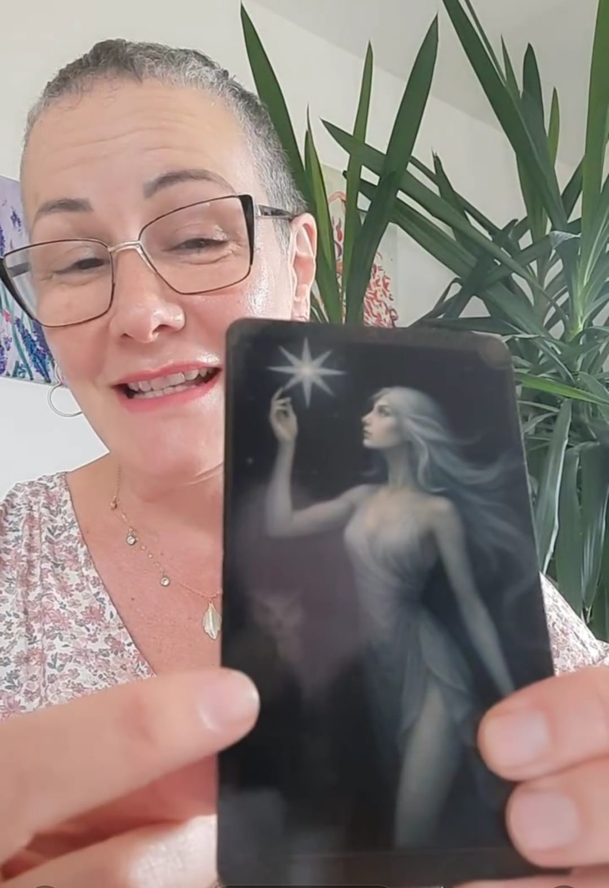
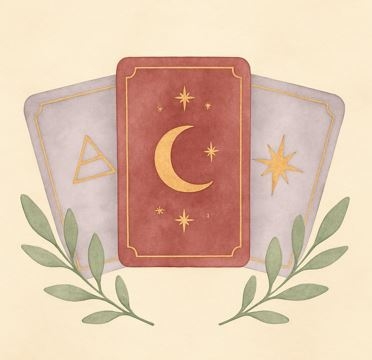
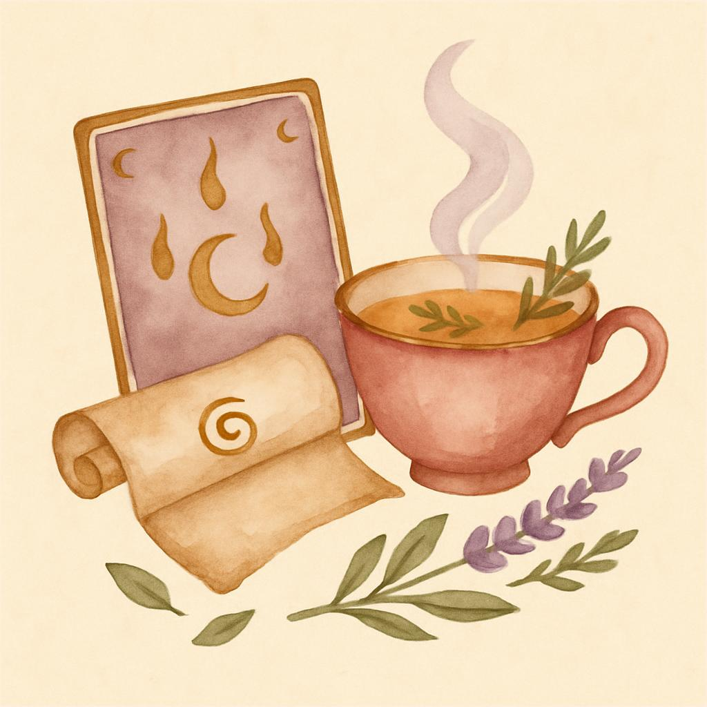
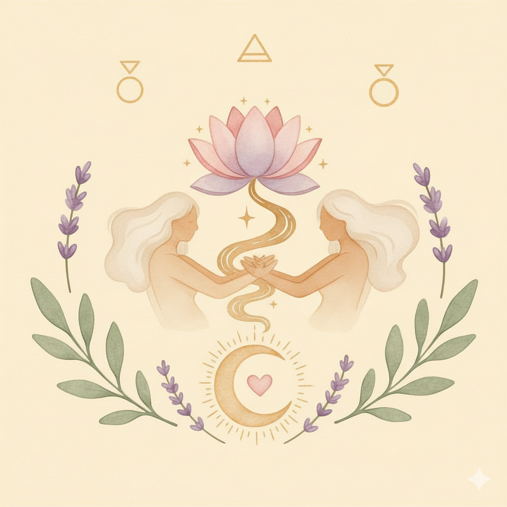
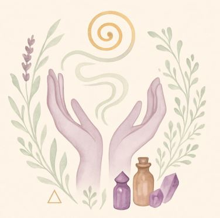
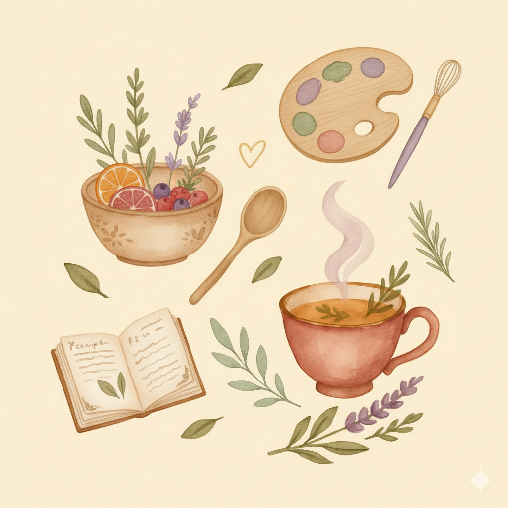
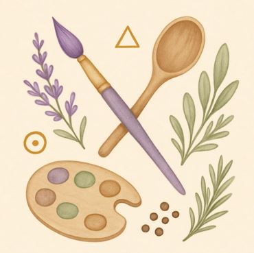
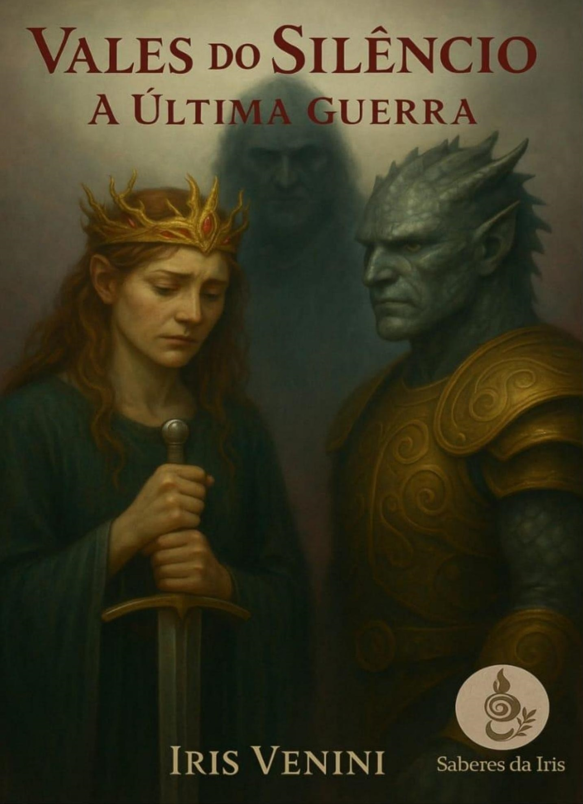

Terapias e Alquimias do Feminino
Aqui, honramos a força, a sensibilidade e a sabedoria do feminino. Este é um portal de reconexão com sua essência, através de terapias espirituais, arte intuitiva, alquimias naturais e culinária terapêutica.
Se você é uma brasileira na Alemanha em busca de acolhimento, cura e reconexão, encontrou o seu lugar. Sinta-se envolvida por aromas, símbolos e saberes que despertam memórias ancestrais e despertam sua potência interior.

Sobre
Minha jornada começou dando palestras de autoconhecimento e espiritualidade em comunidades no Brasil. Sempre acreditei que o conhecimento espiritual deve ser acessível a todos. Durante a pandemia, desenvolvi metodologias únicas que combinam terapia espiritual com arte e culinária terapêutica. Hoje, em Burghausen, ajudo brasileiras a se reconectarem com sua essência.
Com esse propósito, criei o Programa Solidário, uma iniciativa comunitária que oferece acesso aos meus serviços com valores reduzidos, tornando o cuidado espiritual e emocional mais acessível e promovendo redes de apoio entre mulheres. Esse programa é um convite à cura coletiva, à partilha e ao acolhimento. Se ficou interessada, entre em contato!
Serviços
Venha conferir nossas opções!

Consulta de Tarot
Um mergulho intuitivo em símbolos e arquétipos. Cada carta revela caminhos, reflexões e possibilidades para sua jornada.Baralho Cigano
Sabedoria ancestral em cada carta. O baralho cigano revela com clareza e sensibilidade os movimentos da sua vida.
Pacote Alma
Consiste em um atendimento individualizado, em que trataremos questões profundas que afetam diretamente a alma do consulente.
Atendimento Terapêutico
Sessões de acolhimento e cura emocional. Um espaço seguro para reconexão com seu bem-estar e equilíbrio interior.
Sessões de Libertação
Processo profundo de liberação energética e emocional. Transforme padrões limitantes e recupere sua essência luminosa.🌱 Programa Solidário: Acreditamos que a cura deve ser acessível a todas. Valores reduzidos para promover redes de apoio e acolhimento entre mulheres. Se ficou interessada, entre em contato!
Oficinas Terapêuticas
Experiências transformadoras de cura e criação

Cozinha Terapêutica
Uma jornada sensorial que une o preparo de alimentos com processos de cura emocional. Através da culinária consciente, reconectamos com nossas raízes, memórias afetivas e o poder transformador dos alimentos naturais.

Artes Terapêuticas
Explore sua criatividade como ferramenta de autoconhecimento e cura. Através da arte intuitiva, desbloqueamos emoções, fortalecemos a autoestima e descobrimos novas formas de expressar nossa essência.
🌿 Valores flexíveis conforme o Programa Solidário.
Livro Digital: Vales do Silêncio

"Este não é apenas um conto. É um sonho que ficou guardado por seis anos..."
Um conto mítico sobre escuta, guerra e reconciliação entre povos ancestrais.
Baixar eBook GratuitoContato
Entre em contato via WhatsApp ou Instagram.
Agende uma consulta!